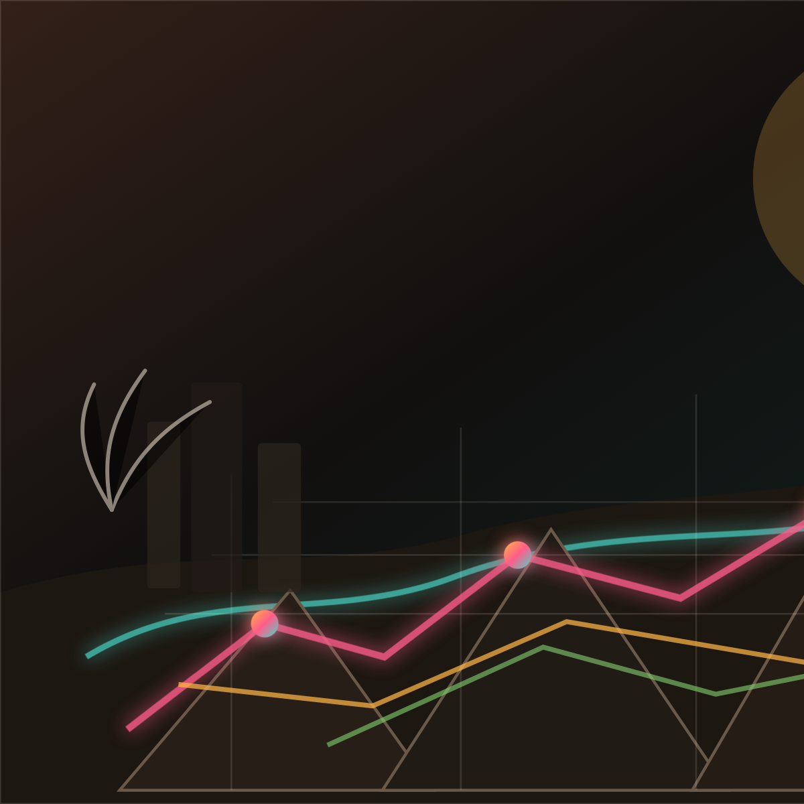

GTA 6 100% Completion Guide & Interactive Checklist

On this page, you will find a first MVP version of a GTA 6 100% completion guide and interactive checklist. The goal is to organize likely completion objectives before launch, then replace estimates with verified in-game requirements as soon as the game is available.
This format is built for completionists, casual players who do not want to miss major content, and guide readers who prefer a clear article with a tracker instead of a landing page.
What Will Likely Be Required For 100% Completion In GTA 6?
Based on past Grand Theft Auto completion structures, GTA 6 will likely combine story progress, side content, activities, collectibles, and open-world challenges. The MVP keeps each category separate so the guide can be updated without rewriting the whole page.
1. Main Story Missions
Complete the storyline missions that follow Jason and Lucia through Vice City and the wider state of Leonida. The exact mission list is not public yet, so this section starts as a placeholder for launch-week updates.
2. Side Missions & Strangers
Side characters and stranger encounters are likely to provide optional mission chains. These pages should eventually include unlock conditions, map locations, rewards, and spoiler labels.
3. Activities & Mini-Games
Pre-launch demand is already high for activities, sports, races, and mini-games. The tracker uses flexible labels so confirmed activities can be added without changing the layout.
4. Random Events
Dynamic events across Leonida may count toward completion or related stats. The MVP treats them as a category to monitor until Rockstar or the released game confirms their role.
5. Collectibles
Collectibles are usually one of the highest-retention guide categories. The final version should support checklist progress, location notes, map links, and screenshot slots for every collectible.
6. Properties, Vehicles, Weapons, And Challenges
Business/property management, vehicle tasks, weapon challenges, races, stunt-style objectives, and achievements may overlap with completion. These should be tracked in separate tables once verified.
GTA 6 100% Completion Checklist
The interactive checklist below is an MVP tracker. It saves progress in the browser, supports search and category filtering, and uses status tags to avoid mixing confirmed facts with predictions.
Interactive Tracker
Main Story Missions 0%
Side Missions & Strangers 0%
Activities & Mini-Games 0%
Collectibles 0%
Vehicles, Weapons & Challenges 0%
User Characteristics And Demand Analysis
The target user is not looking for a cinematic homepage. They want a fast, database-like answer with clear progress utility. For the MVP, prioritize pages that help players track, compare, and return repeatedly.
- Completionists: need category progress, checkboxes, map links, and zero ambiguity about what counts.
- Casual players: need a simple list that prevents missed content without spoilers.
- Search users: need release/platform facts, estimated completion time, and likely objective categories.
- Creators: need clearly separated confirmed, expected, and pending information for quick research.
How Long Will It Take To Reach 100% Completion In GTA 6?
Exact playtime is unknown before release, but past Rockstar titles suggest the complete route will be much longer than the main campaign. This table is an MVP estimate and should be replaced after player data is available.
| Play Style | Estimated Hours | MVP Notes |
|---|---|---|
| Main Story Only | 30-45 hours | Depends on mission pacing and travel density. |
| Story + Major Side Content | 65-90 hours | Most guide readers will land here first. |
| Full 100% Completion | 110-160+ hours | Collectibles and challenges drive variance. |